library(tidyverse)
library(here)2025-03-31
Data
# loading the cleaned data version
dat <- readRDS(here("data", "emoint.rds"))Participant-level
Let’s compute some statistics at the participant level:
Overall accuracy of the experiment:
chance_level <- 1 / length(unique(dat$response))
dat |>
group_by(id) |>
summarise(acc = mean(acc),
n_trials = n()) |>
ggplot(aes(x = acc, y = id)) +
geom_point(aes(size = n_trials)) +
geom_vline(xintercept = chance_level, lwd = 1, lty = "dashed")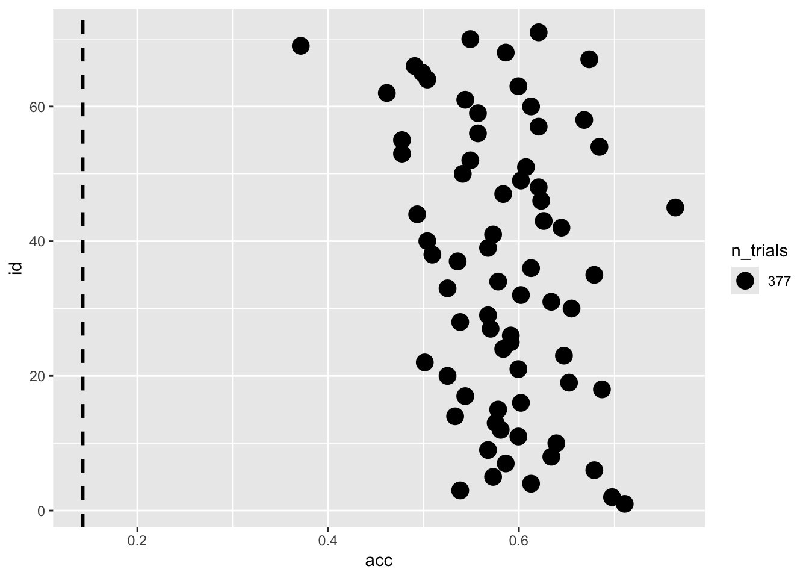
All the participants are clearly above the chance level. For each trial there was all the 7 options.
dat |>
filter(emotion_lbl != "neutral") |>
group_by(id, emotion_lbl) |>
summarise(acc = mean(acc),
n_trial = n()) |>
ggplot(aes(x = emotion_lbl, y = acc, fill = emotion_lbl)) +
geom_point(aes(size = n_trial), position = position_jitter(width = 0.3, seed = 2025), alpha = 0.5, show.legend = FALSE) +
geom_boxplot(show.legend = FALSE)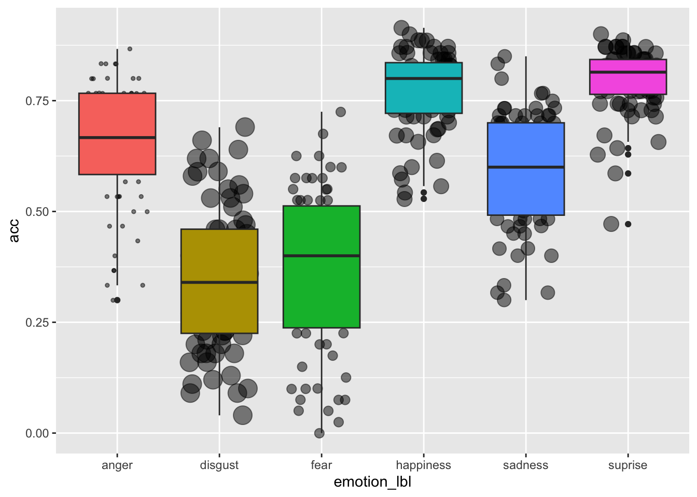
dat |>
filter(emotion_lbl != "neutral") |>
group_by(id, intensity) |>
summarise(acc = mean(acc)) |>
ggplot(aes(x = intensity, y = acc)) +
geom_point() +
geom_line(aes(group = id), alpha = 0.5) +
geom_boxplot(aes(group = intensity))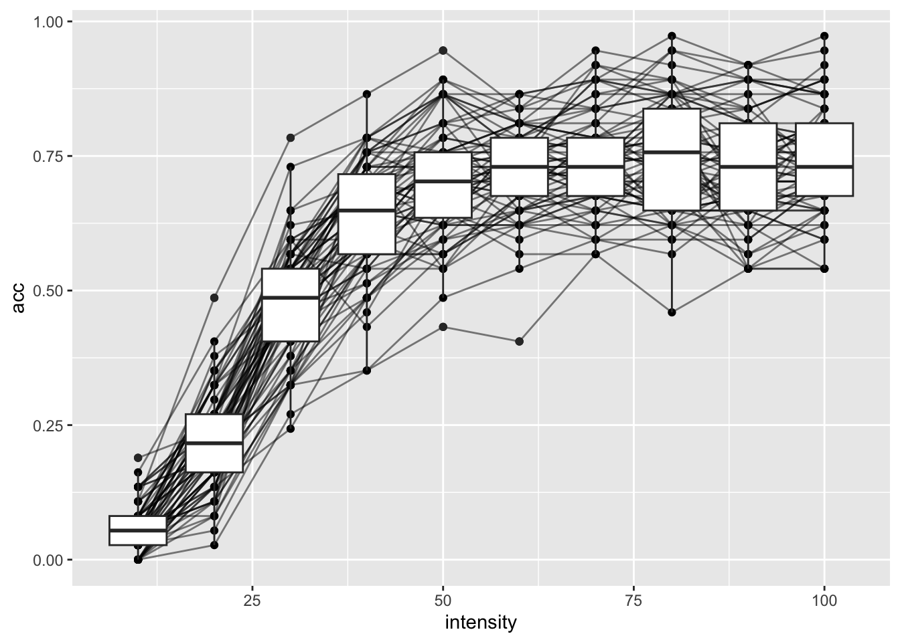
Errors
dat |>
group_by(emotion_lbl, response_lbl) |>
count() |>
group_by(emotion_lbl) |>
mutate(tot = sum(n)) |>
ungroup() |>
mutate(p = n / tot) |>
mutate(is_correct = ifelse(emotion_lbl == response_lbl, 1, 0)) |>
ggplot(aes(x = response_lbl, fill = factor(is_correct), y = p)) +
geom_col(position = position_dodge(), show.legend = FALSE) +
facet_wrap(~emotion_lbl, scales = "free_y") +
theme(
axis.text.x = element_text(angle = 90)
) +
ylim(c(0,1)) +
scale_fill_manual(values = c(scales::alpha("black", 0.5), "firebrick"))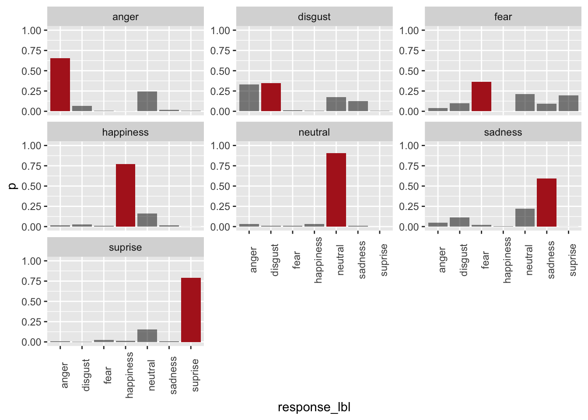
This is the proportion of responses for each emotion label as a function of the intensity.
dat |>
filter(emotion_lbl != "neutral") |>
group_by(emotion_lbl, response_lbl, intensity) |>
count() |>
group_by(emotion_lbl, intensity) |>
mutate(tot = sum(n)) |>
ungroup() |>
mutate(p = n / tot) |>
mutate(is_correct = ifelse(emotion_lbl == response_lbl, 1, 0)) |>
ggplot(aes(x = intensity, y = p, color = response_lbl)) +
facet_wrap(~emotion_lbl) +
geom_line(aes(lty = factor(is_correct)), lwd = 1) +
scale_linetype_manual(values = c("dashed", "solid"), guide = "none")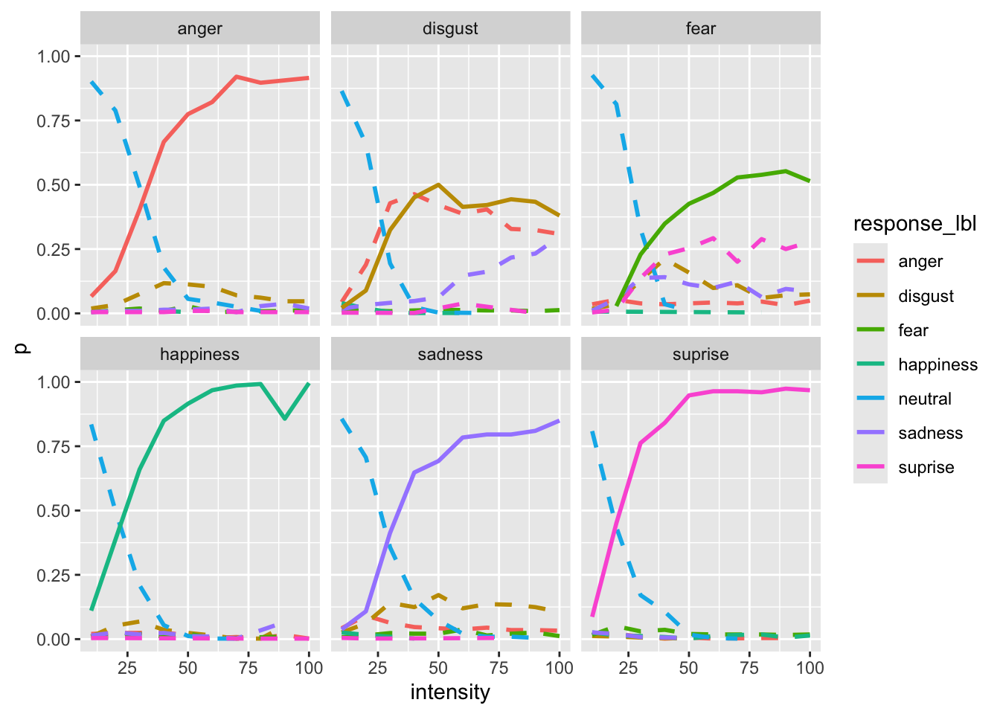
Variability measures
Here I’m calculating a variability measure (Shannon Entropy) to capture the variability of responses for a specific intensity level for each emotion. Higher entropy means a more uncertain response.
entropy <- function(p, relative = FALSE) {
p <- p[p > 0] # Exclude zero probabilities to avoid log(0)
H <- -sum(p * log2(p))
if (relative) {
H <- H / log2(length(p))
}
return(H)
}
dat |>
filter(emotion_lbl != "neutral") |>
group_by(emotion_lbl, response_lbl, intensity) |>
count() |>
group_by(emotion_lbl, intensity) |>
mutate(tot = sum(n)) |>
ungroup() |>
mutate(p = n / tot) |>
mutate(is_correct = ifelse(emotion_lbl == response_lbl, 1, 0)) |>
group_by(emotion_lbl, intensity) |>
summarise(entropy = entropy(p, relative = TRUE)) |>
ggplot(aes(x = intensity, y = entropy)) +
geom_line(aes(color = emotion_lbl), lwd = 1)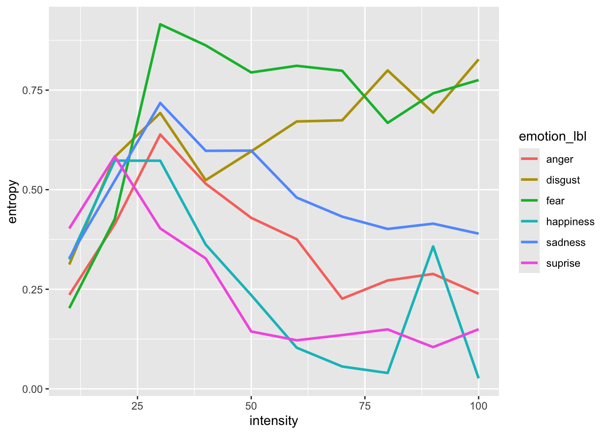
get_intersection <- function(y1, y2, x){
x[which.min(abs(y1 - y2))]
}
get_intersection_point <- function(data){
data <- data |>
select(intensity, response_lbl, p) |>
pivot_wider(names_from = response_lbl, values_from = p)
datat <- select(data, -intensity)
idx <- combn(1:ncol(datat), 2) # variables combination
datat <- mutate(datat, across(everything(), replace_na, 0)) # replace NA with 0
x <- unique(data$intensity)
res <- vector(mode = "list", length = ncol(idx))
for(i in 1:length(res)){
rc <- idx[, i]
ii <- get_intersection(datat[[rc[1]]], datat[[rc[2]]], x)
res[[i]] <- data.frame(intensity = ii, emo1 = names(datat)[rc[1]], emo2 = names(datat)[rc[2]])
}
do.call(rbind, res)
}
int_point <- dat |>
filter(emotion_lbl != "neutral") |>
group_by(emotion_lbl, response_lbl, intensity) |>
count() |>
group_by(emotion_lbl, intensity) |>
mutate(tot = sum(n)) |>
ungroup() |>
mutate(p = n / tot) |>
group_nest(emotion_lbl) |>
mutate(int_point = map(data, get_intersection_point))Face-specific effects
We can also visualize some identity-specific effect to see if the pattern is the same for each face.
by_face <- dat |>
filter(emotion_lbl != "neutral") |>
group_by(face, emotion_lbl, response_lbl, intensity) |>
count() |>
group_by(emotion_lbl, intensity) |>
mutate(tot = sum(n)) |>
mutate(p = n/tot) |>
group_by(emotion_lbl) |>
nest() |>
mutate(plt = map(data, function(x){
ggplot(x, aes(x = intensity, y = p, color = response_lbl)) +
geom_line() +
facet_wrap(~face)
}))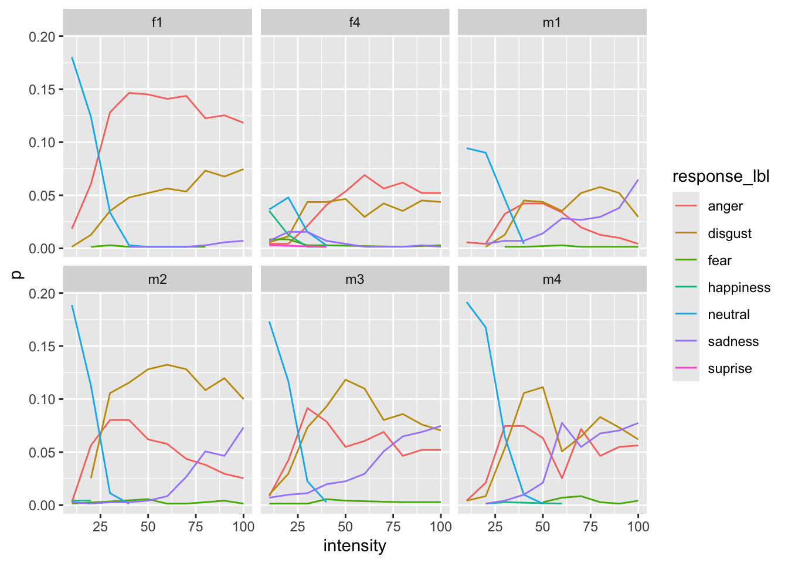
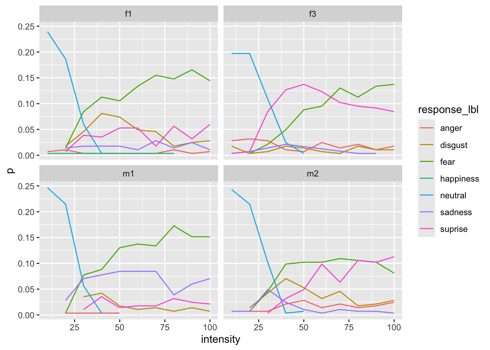
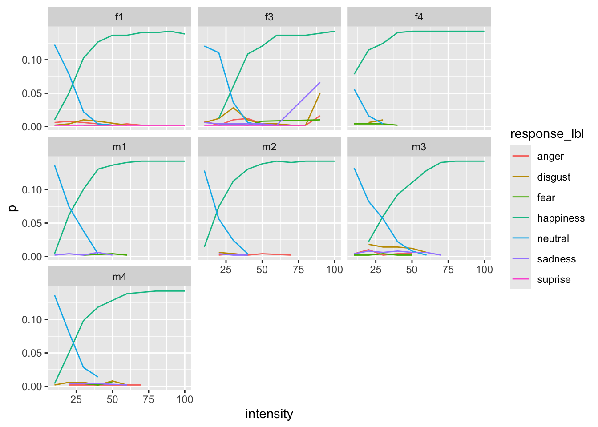
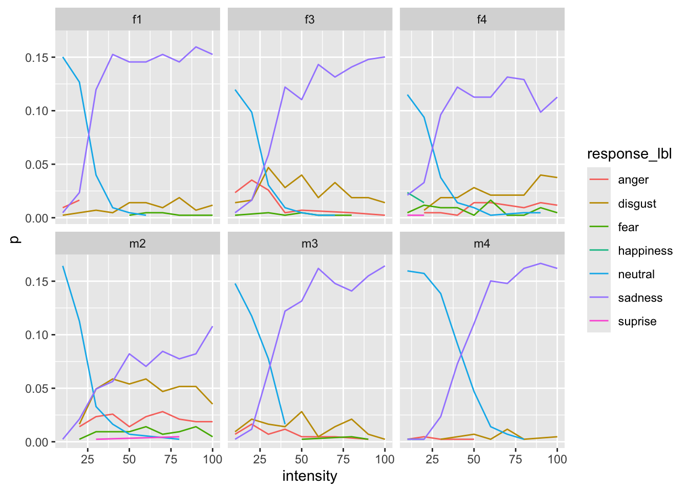
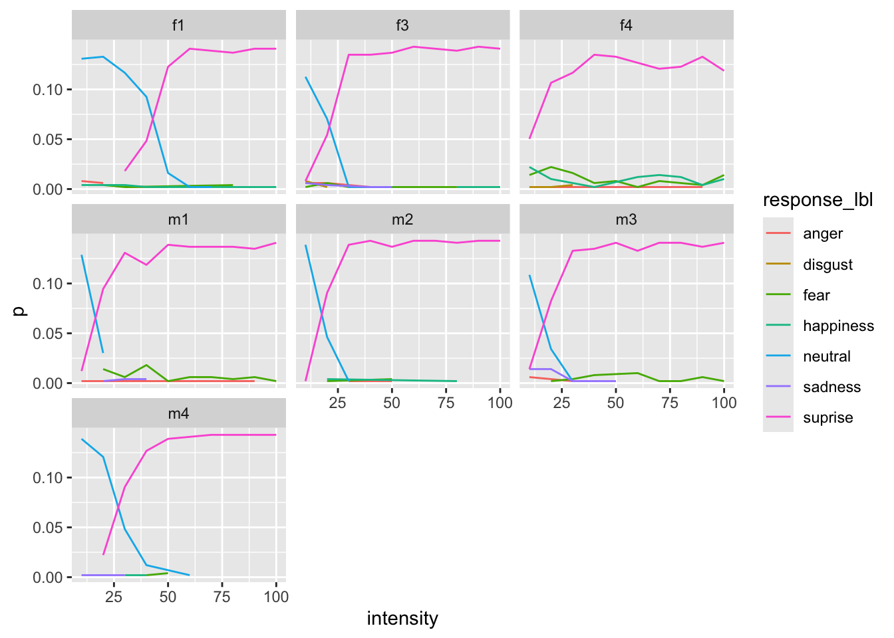
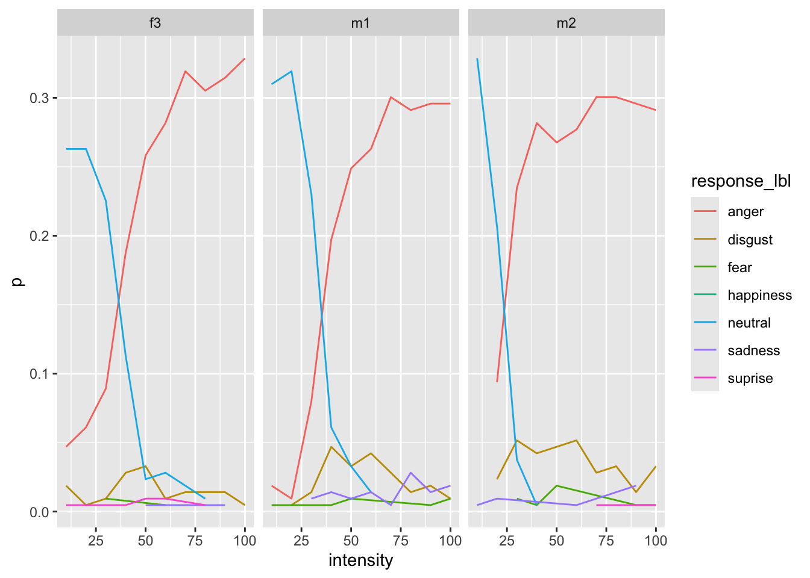
Overall plot [try to reproduce :)]
dat |>
filter(emotion_lbl != "neutral") |>
ggplot(aes(x = intensity, y = acc, color = emotion_lbl)) +
stat_smooth(aes(group = id), geom = "line", method = "glm", formula = y ~ x, method.args = list(family = binomial()), se = FALSE, alpha = 0.5) +
facet_wrap(~emotion_lbl) +
geom_point(position = position_jitter(height = 0.05),
alpha = 0.05, color = "black") +
xlab("Intensity") +
ylab("Accuracy") +
geom_smooth(aes(x = intensity, y = acc), method = "glm", formula = y ~ x, method.args = list(family = binomial()), se = FALSE, color = "black") +
theme_minimal(base_size = 20) +
theme(legend.position = "none")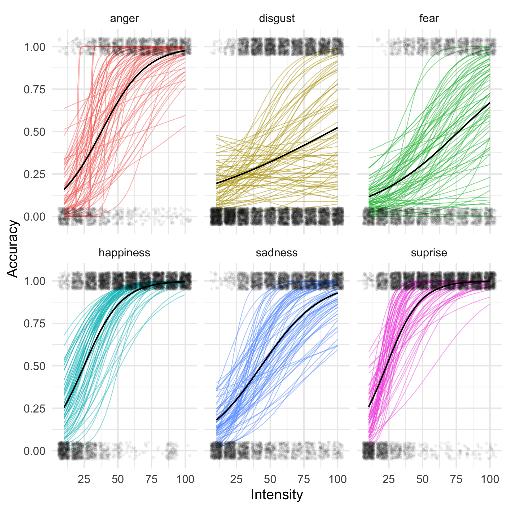